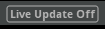
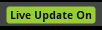

FMOD Studio User Manual 1.10
As mentioned in the chapter on profiling, live update is a way of connecting FMOD Studio to your game as it runs, allowing you to update and monitor audio content in real time. This chapter focuses on how you can use live update while editing your FMOD Studio project.
Any and all changes made to your FMOD Studio project during a live update session become audible in your game as immediately as your network connection speed permits. Being able to hear the changes being made as you make them means that you can tweak, adjust, and mix your game's audio content live. This reduces the amount of time and effort required to iterate on your game's audio content.
Any and every change you make to your project during a live update session is immediately propagated to your game, and there are no restrictions on the kind of changes you can make. For example, if you import a new audio asset and add it to one of the events playing in your game, you will hear your game begin to play that asset within moments.
If you create a new event during a live update session, you will need to add appropriate triggers for that event to your game if you want your game to play it. Similarly, if you change an event's path to something other than what your game currently uses to identify it, or replace an event that your game identifies by GUID, that event will not play until you update your game code to use the new path or GUID.
As with changes made to your FMOD Studio project in other circumstances, changes made to your FMOD Studio project during a live update session only become a permanent part of your game if you then save and build the FMOD Studio project and copy the built banks into your game. If you do not build and copy the banks to your game, the changes you make during a live update session will no longer apply to your game once the live update session is ended.
Before you can connect to your game, it must be prepared to receive a live update connection. The exact details of preparing a game for connection differ depending on the engine your game uses.
When using the FMOD Unity integration, live update is automatically enabled by default. To check this, select "Edit Settings" from the "FMOD" menu in your Unity project.
By default, live update will be set to enabled for "Play in Editor" and disabled for built games. A text box underneath these settings will inform you what port is being used.
Starting your game or beginning in the "Play in Editor" mode will send information over the specified port.
When using the FMOD Unreal Engine 4 integration, live update is automatically enabled by default. To check this, select "Project Settings" from the "Edit" menu in your Unreal Engine 4 project, and look in the "FMOD Studio" section in "Plugins".
Live update will be set to enabled for all non-final builds by default. You can specify a port number in the "Live Update Port" option under the "Advanced" settings.
Starting your game or beginning in the "Play in Editor" mode will send information over the specified port.
When using the FMOD Studio API, you can enable live update by using FMOD_STUDIO_INIT_LIVEUPDATE when initializing the FMOD Studio system.
By default, FMOD Studio listens for connections on port 9264, however you can specify a different port using Studio::System::setAdvanceSettings.
Note that while the FMOD Studio API includes support for live update, the FMOD Studio Low Level API does not. If your game uses only the FMOD Studio low level API and not the FMOD Studio API, it will not be possible to connect to your game with live update.
Once your game is prepared for live update connection, you can connect FMOD Studio to it over a network.
To connect FMOD Studio to your game, select "Connect to Game..." in FMOD Studio's "File" menu. This opens the "Connect to Game" dialog, in which you can specify the IP address and port of a machine on which an instance of your game is running. This dialog accepts the following formats:
"localhost" indicates the machine on which FMOD Studio is running. If you do not specify a port, FMOD Studio defaults to port 9264.
If you specify an appropriate IP address and port and click the "Connect" button, a live update session begins.
During a live update session, the live update status indicator in the bottom-right corner of every FMOD Studio window is green and reads "Live Update ON". In addition, meters throughout FMOD Studio reflect the audio playing through your game instead of the events auditioning in FMOD Studio.


You can also use live update to connect to the FMOD Studio sandbox. This may be useful if your game does not support live update, or if it is currently unable to receive a connection.
A live update connection to the sandbox is automatically attempted whenever you open the Sandbox window.